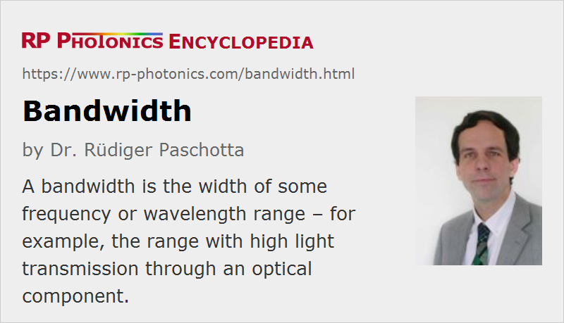

Bandwidth
Definition: the width of some frequency or wavelength range
More specific terms: gain bandwidth, resonator bandwidth, modal bandwidth, phase-matching bandwidth
German: Bandbreite
Categories: light detection and characterization, physical foundations
Formula symbol: Δν, Δλ
Units: Hz, nm
How to cite the article; suggest additional literature
Author: Dr. Rüdiger Paschotta
In photonics, the term bandwidth occurs in many different cases. The following sections discuss some important cases.
Bandwidth in Terms of Optical Frequency
In the following cases, bandwidth means the width of a range of optical frequencies:
- A light source can have some bandwidth (or linewidth), meaning the width of the optical spectrum of the output. The narrow-linewidth lasers, where the bandwidth can be extremely small – sometimes below 1 Hz, which is many orders of magnitude less than the mean optical frequency. On the other hand, ultrashort pulses with few-femtosecond pulse durations can have very large bandwidth – easily tens of terahertz.
- An optical bandwidth can be the width of a frequency range which can somehow be handled by an optical element or photonic device. For example, it can be the reflection bandwidth of a mirror, the optical transmission bandwidth of an optical fiber, the gain bandwidth of an optical amplifier, or the phase-matching bandwidth of a nonlinear optical device.
A common definition of spectral width is the full width at half maximum (FWHM), but other definitions are also used. For example some authors use the half width at half maximum (HWHM), which is just half the FWHM.
Optical bandwidth values may be specified in terms of frequency or wavelength. Due to the inverse relationship of frequency and wavelength, the conversion factor between gigahertz and nanometers depends on the center wavelength or frequency. For converting a (small) wavelength interval into a frequency interval, the equation
can be used. (It can be obtained by considering the derivative of ν = c / λ with respect to λ.) This shows that 1 nm is worth more gigahertz if the center wavelength is shorter.
The optical bandwidth of a light source is strongly related to the temporal coherence, characterized with the coherence time.
Both for passive resonators (e.g. optical cavities) and for the output of oscillators (e.g. lasers), the Q factor is the oscillation frequency divided by the bandwidth.
Bandwidth of Modulations
A bandwidth can also indicate the maximum frequency with which a light source can be modulated, or at which modulated light can be detected with a photodetector.
In the area of optical fiber communications, the term bandwidth is also often inaccurately used for the data rate (e.g. in units of Gbit/s) achieved in an optical communication system. A more appropriate term would be data rate or data transmission capacity, avoiding any confusion with optical bandwidth.
Note that the data transmission capacity has only a limited relation to the optical bandwidth, as it is a signal bandwidth. Although a large signal bandwidth is not possible without a large optical bandwidth, different communications devices can differ substantially in terms of spectral efficiency, i.e., concerning what data rate is achievable per megahertz of optical bandwidth.
Questions and Comments from Users
Here you can submit questions and comments. As far as they get accepted by the author, they will appear above this paragraph together with the author’s answer. The author will decide on acceptance based on certain criteria. Essentially, the issue must be of sufficiently broad interest.
Please do not enter personal data here; we would otherwise delete it soon. (See also our privacy declaration.) If you wish to receive personal feedback or consultancy from the author, please contact him e.g. via e-mail.
By submitting the information, you give your consent to the potential publication of your inputs on our website according to our rules. (If you later retract your consent, we will delete those inputs.) As your inputs are first reviewed by the author, they may be published with some delay.
See also: optical spectrum, time–bandwidth product, gain bandwidth, coherence time, transform limit, modal bandwidth, bandwidth–distance product, Q factor, phase-matching bandwidth, wavelength, optical frequency, telecom fibers, The Photonics Spotlight 2007-10-11
and other articles in the categories light detection and characterization, physical foundations
|  |
If you like this page, please share the link with your friends and colleagues, e.g. via social media: 


These sharing buttons are implemented in a privacy-friendly way! |
2020-04-07
Just a curious question about data transfer. Does the choice of light wavelength give us a cap on how much data we can transfer? And would short wavelengths give us a higher cap? And if so is there an analytical expression for this fundamental limit?
Answer from the author:
The center wavelength does not matter, only the width of the used optical frequency range.
The possible transmission bandwidth is the product of the optical bandwidth with the so-called spectral efficiency – which depends on the used modulation format and the achieved signal-to-noise ratio, which is of course influenced by propagation losses, detector noise etc. So I think there is no fundamental limit, but there are practical limits to the achievable spectral efficiency. It is typically of the order of 1 bit/s per Hertz of optical bandwidth. For more details see the article on optical data transmission.